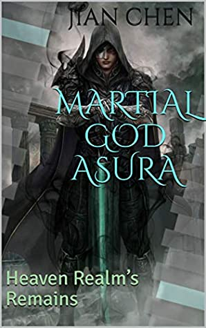

Novel Post
October 2, 2020 by Corey
 Martial God Asura is a chinese fantasy novel based of the cultivation world. In this novel there are many people who pursue the art of cultivation in there pursuit to immortality. the main protagonist was banished from his family along
with his father beacuse of him having no talent for cultivation. After struggling for 10 years his talent finally begins to bloom and he has now become one of the most talented of his generation. he is now traveling the world and is
currently on a journey to prove himself to his clan that they where wrong.
This book is a chinese webnovel translated to english and currently has 4900+ chapters. This novel would be a great start for begginer or new readers to wuxia or if you are a person who enjoys action and alot of fights
this would also be the perfect novel for you. if you are not intrested in this novel then it is fine there are other novels that are available in the wuxia genre for all to enjoy.